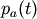
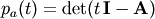

numpy.poly¶
- numpy.poly(seq_of_zeros)¶
Find the coefficients of a polynomial with the given sequence of roots.
Returns the coefficients of the polynomial whose leading coefficient is one for the given sequence of zeros (multiple roots must be included in the sequence as many times as their multiplicity; see Examples). A square matrix (or array, which will be treated as a matrix) can also be given, in which case the coefficients of the characteristic polynomial of the matrix are returned.
Parameters : seq_of_zeros : array_like, shape (N,) or (N, N)
A sequence of polynomial roots, or a square array or matrix object.
Returns : c : ndarray
1D array of polynomial coefficients from highest to lowest degree:
c[0] * x**(N) + c[1] * x**(N-1) + ... + c[N-1] * x + c[N] where c[0] always equals 1.
Raises : ValueError :
If input is the wrong shape (the input must be a 1-D or square 2-D array).
See also
Notes
Specifying the roots of a polynomial still leaves one degree of freedom, typically represented by an undetermined leading coefficient. [R53] In the case of this function, that coefficient - the first one in the returned array - is always taken as one. (If for some reason you have one other point, the only automatic way presently to leverage that information is to use polyfit.)
The characteristic polynomial, , of an n-by-n matrix A is given by
,where I is the n-by-n identity matrix. [R54]
References
[R53] (1, 2) M. Sullivan and M. Sullivan, III, “Algebra and Trignometry, Enhanced With Graphing Utilities,” Prentice-Hall, pg. 318, 1996. [R54] (1, 2) G. Strang, “Linear Algebra and Its Applications, 2nd Edition,” Academic Press, pg. 182, 1980. Examples
Given a sequence of a polynomial’s zeros:
>>> np.poly((0, 0, 0)) # Multiple root example array([1, 0, 0, 0])
The line above represents z**3 + 0*z**2 + 0*z + 0.
>>> np.poly((-1./2, 0, 1./2)) array([ 1. , 0. , -0.25, 0. ])
The line above represents z**3 - z/4
>>> np.poly((np.random.random(1.)[0], 0, np.random.random(1.)[0])) array([ 1. , -0.77086955, 0.08618131, 0. ]) #random
Given a square array object:
>>> P = np.array([[0, 1./3], [-1./2, 0]]) >>> np.poly(P) array([ 1. , 0. , 0.16666667])
Or a square matrix object:
>>> np.poly(np.matrix(P)) array([ 1. , 0. , 0.16666667])
Note how in all cases the leading coefficient is always 1.